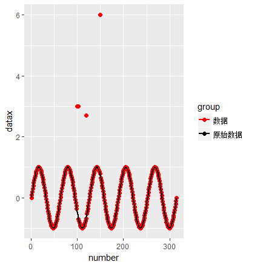
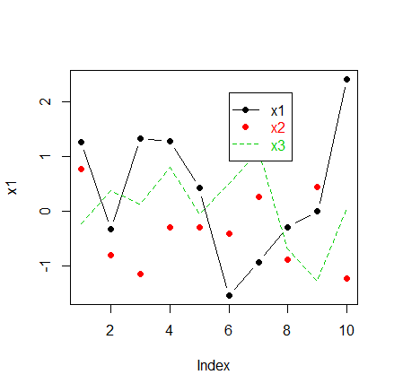
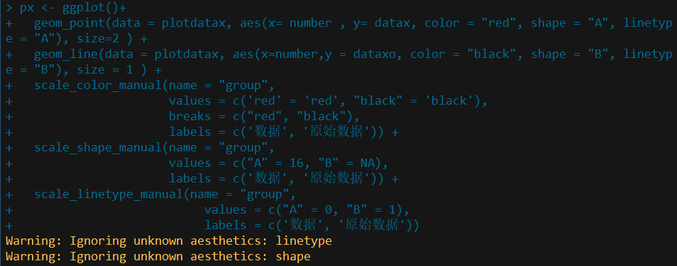
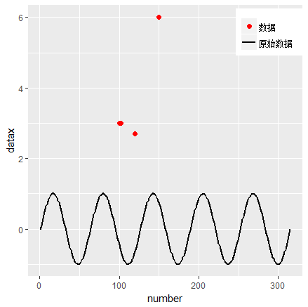

ggplot中图例的使用（以某知乎问题为例）¶
在知乎上浏览到这样一个问题R语言ggplot如何添加图例？ - 知乎，问题关键在于如何自定义满足下列条件的legend
- 涉及两个数据集（虽然是同一个，但重复调用，相当于两个）
- legend仅仅为点或线段（一般默认会同时显示点或线段）
普遍的情形¶
参考Legends (ggplot2) | Cookbook for R这篇博文，应该可以解决一般情形下往ggplot中添加legends的问题。举个例子
# A different data set
df1 <- data.frame(
sex = factor(c("Female","Female","Male","Male")),
time = factor(c("Lunch","Dinner","Lunch","Dinner"), levels=c("Lunch","Dinner")),
total_bill = c(13.53, 16.81, 16.24, 17.42)
)
# A basic graph
lp <- ggplot(data=df1, aes(x=time, y=total_bill, group=sex, shape=sex)) + geom_line() + geom_point()
lp
# Change the legend
lp + scale_shape_discrete(name ="Payer",
breaks=c("Female", "Male"),
labels=c("Woman", "Man"))

多个数据集¶
上述普遍的情形是涉及单一数据集，且类别标签已经存在数据集中，若多个数据集，数据集本身没有类别标签，但不同数据集表示不同类，则可以参考R: Custom Legend for Multiple Layer ggplot | stackoverflow。
require(ggplot2)
x=seq(1,10,length=100)
data=data.frame(x,dnorm(x,mean=6.5,sd=1))
names(data)=c('x','new.data')
x.ribbon=seq(1,10,length=20)
ribbon=data.frame(x.ribbon,
dnorm(x.ribbon,mean=5,sd=1)+.01,
dnorm(x.ribbon,mean=5,sd=1)-.01,
dnorm(x.ribbon,mean=5,sd=1))
names(ribbon)=c('x.ribbon','max','min','avg')
ggplot()+#geom_ribbon(data=ribbon,aes(ymin=min,ymax=max,x=x.ribbon,fill='lightgreen'))+
geom_line(data=ribbon,aes(x=x.ribbon,y=avg,color='black'))+
geom_line(data=data,aes(x=x,y=new.data,color='red'))+
xlab('x')+ylab('density') +
#scale_fill_identity(name = 'the fill', guide = 'legend',labels = c('m1')) +
scale_colour_manual(name = 'the colour',
values =c('black'='black','red'='red'), labels = c('c2','c1'))

单一shape或linetype¶
一开始对原知乎问题给出下面的解法
px <- ggplot()+
geom_point(data = plotdatax, aes(x= number , y= datax, color = "red"), size=2 ) +
geom_line(data = plotdatax, aes(x=number,y = dataxo, color = "black"), size = 1 ) +
scale_color_manual(name = "group",
values = c('red' = 'red', "black" = 'black'),
breaks = c("red", "black"),
labels = c('数据', '原始数据'))

但图例同时存在shape和linetype，对于普通的plot，可以用NA来使得point type或linetype不显示，具体可以参考R plot: Displaying both point type and line type in legend | stackoverflow。
set.seed(0); x1 <- rnorm(10); x2 <- rnorm(10); x3 <- rnorm(10)
plot(x1, type = "b", pch = 19, lty = 1, col = 1,
ylim = range(c(x1,x2,x3))) ## both points and lines
points(x2, pch = 19, col = 2) ## only points
lines(x3, lty = 2, col = 3) ## only lines
legend(6, 0.9*max(c(x1,x2,x3)), legend = c("x1", "x2", "x3"),
pch = c(19, 19, NA), lty = c(1, NA, 2),
col = c(1,2,3), text.col = c(1,2,3))

受此启发，也尝试在ggplot中使用，尝试后发现，对于shape用NA可以不显示点的形状，而linetype要用0才能不显示线条。
px <- ggplot()+
geom_point(data = plotdatax, aes(x= number , y= datax, color = "red", shape = "A", linetype = "A"), size=2 ) +
geom_line(data = plotdatax, aes(x=number,y = dataxo, color = "black", shape = "B", linetype = "B"), size = 1 ) +
scale_color_manual(name = "group",
values = c('red' = 'red', "black" = 'black'),
breaks = c("red", "black"),
labels = c('数据', '原始数据')) +
scale_shape_manual(name = "group",
values = c("A" = 16, "B" = NA),
labels = c('数据', '原始数据')) +
scale_linetype_manual(name = "group",
values = c("A" = 0, "B" = 1),
labels = c('数据', '原始数据'))
px + theme(legend.title=element_blank(),
legend.position = c(0.9, 0.9))

虽然与题主要求相符，但其实上述代码会报warning，如下

原因是geom_point中的aes没有linetype参数；
而geom_line中的aes没有shape参数，但如果前者不对linetype进行赋值，后者不对shape进行赋值，则得到的图形会有两个图例块。

更简洁更准确的做法应该是先对这些点进行标签，然后设置每个标签的color, shape以及linetype，代码如下：
plotdatax$group = ifelse(datax == dataxo, "c2", "c1")
px <- ggplot(plotdatax, aes(color = group, shape = group, linetype = group))+
geom_point(aes(x= number , y= datax), size=2 ) +
geom_line(aes(x=number,y = dataxo), size = 1 ) +
scale_color_manual(name = "group",
values = c("c1" = 'red', "c2" = 'black'),
labels = c('数据', '原始数据')) +
scale_shape_manual(name = "group",
values = c("c1" = 16, "c2" = NA),
labels = c('数据', '原始数据')) +
scale_linetype_manual(name = "group",
values = c("c1" = 0, "c2" = 1),
labels = c('数据', '原始数据'))
px + theme(legend.title=element_blank(),
legend.position = c(0.9, 0.9))

不过这样黑线少掉了红色点，也就是认为那些不在直线上的点才是第二类的点。如果坚持题主的意思，则完全可以重新构造数据集，代码如下
length <-length(datax)
x.matrix1 <- cbind(1:length, datax)
x.matrix2 <- cbind(1:length, dataxo)
x.matrix <- rbind(x.matrix1, x.matrix2)
colnames(x.matrix) <- c("number", "datax")
plotdatax <- as.data.frame(x.matrix)
plotdatax$group <- rep(c("c1", "c2"), each = length)
px <- ggplot(plotdatax, aes(x = number, y = datax, color = group, shape = group, linetype = group))+
geom_point(size=2) +
geom_line(size = 1) +
scale_color_manual(name = "group",
values = c("c1" = 'red', "c2" = 'black'),
labels = c('数据', '原始数据')) +
scale_shape_manual(name = "group",
values = c("c1" = 16, "c2" = NA),
labels = c('数据', '原始数据')) +
scale_linetype_manual(name = "group",
values = c("c1" = 0, "c2" = 1),
labels = c('数据', '原始数据'))
px + theme(legend.title=element_blank(),
legend.position = c(0.9, 0.9))

参考网页¶
除上述明确给出的参考链接，还参考了下列网页
- scale_manual: Create your own discrete scale
- add point and line layers with customized legends in ggplot2
其他¶
附上探索过程中用到的一个toy example
# Sample data
df <- read.table(header=T, text='
cond xval yval
A 1 2.0
A 2 2.5
B 1 3.0
B 2 2.0
')
library(ggplot2)
# Plot with standard lines and points
# group = cond tells it which points to connect with lines
ggplot(df, aes(x=xval, y=yval, group = cond)) +
geom_line() +
geom_point()
# Set overall shapes and line type
ggplot(df, aes(x=xval, y=yval, group = cond)) +
geom_line(linetype="dashed", # Dashed line
size = 1.5) + # Thicker line
geom_point(shape = 0, # Hollow squares
size = 4) # Large points
# Condition shapes and line type on variable cond
ggplot(df, aes(x=xval, y=yval, group = cond)) +
geom_line(aes(linetype=cond), # Line type depends on cond
size = 1.5) + # Thicker line
geom_point(aes(shape=cond), # Shape depends on cond
size = 4) # Large points
# Same as previous, but also change the specific linetypes and
# shapes that are used
ggplot(df, aes(x=xval, y=yval, group = cond)) +
geom_line(aes(linetype=cond), # Line type depends on cond
size = 1.5) + # Thicker line
geom_point(aes(shape=cond), # Shape depends on cond
size = 4) + # Large points
scale_shape_manual(values=c(NA,5)) + # Change shapes
scale_linetype_manual(values=c(1, 0)) # Change linetypes